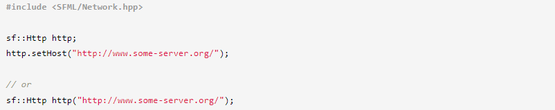
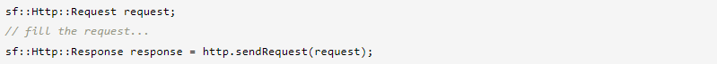
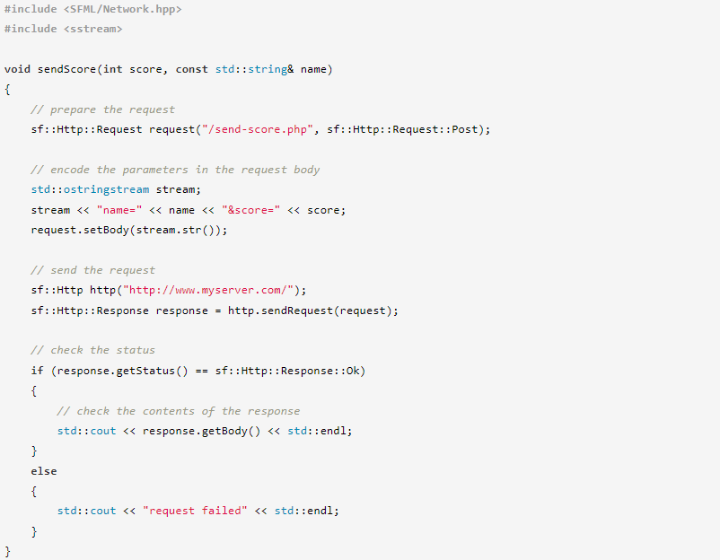
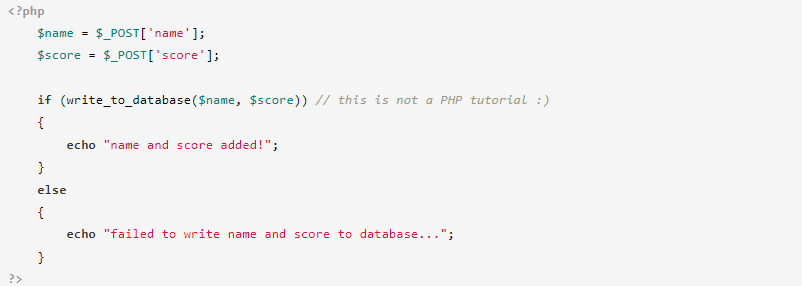

⇐Использование и расширение пакетов
SFML предоставляет простой класс HTTP-клиента, который можно использовать для связи с HTTP-серверами. «Простой» означает, что он поддерживает самые основные функции HTTP: типы запросов POST, GET и HEAD, доступ к полям заголовков HTTP и чтение/запись тела страницы.
Если вам нужны более продвинутые функции, такие как, например, защищенный HTTP (HTTPS), вам лучше использовать настоящую библиотеку HTTP, такую как libcurl или cpp-netlib.
Для базового взаимодействия между вашей программой и HTTP-сервером этого должно быть достаточно.
Для связи с HTTP-сервером вы должны использовать класс sf::Http.
Обратите внимание, что установка хоста не вызывает никакого соединения. Для каждого запроса создается временное соединение.
Единственная другая функция в sf::Http — отправляет запросы. Это в основном все, что делает класс.
HTTP-запрос, представленный классом sf::Http::Request, содержит следующую информацию:
SFML автоматически заполняет обязательные поля заголовка, такие как «Host», «Content-Length» и т. д. Вы можете отправлять свои запросы, не беспокоясь о них. SFML сделает все возможное, чтобы убедиться, что они действительны.
Если класс sf::Http может успешно подключиться к хосту и отправить запрос, ответ отправляется обратно и возвращается пользователю, инкапсулированный в экземпляре класса sf::Http::Response. Ответы содержат следующие члены:
Код состояния можно использовать для проверки того, был ли запрос успешно обработан или нет: коды 2xx представляют успех, коды 3xx представляют собой перенаправление, коды 4xx представляют ошибки клиента, коды 5xx представляют ошибки сервера, а коды 10xx представляют специфические ошибки SFML, которые не являются часть стандарта HTTP.
Вот краткий пример, демонстрирующий, как выполнить простую задачу: отправить счет в онлайн-базу данных.
Конечно, это очень простой способ обработки онлайн-счетов. Защиты нет: любой может легко отправить ложный результат. Более надежный подход, вероятно, будет включать дополнительный параметр, например хэш-код, который гарантирует, что запрос был отправлен программой. Это выходит за рамки этого урока.
И, наконец, вот очень простой пример того, как может выглядеть страница PHP на сервере.
